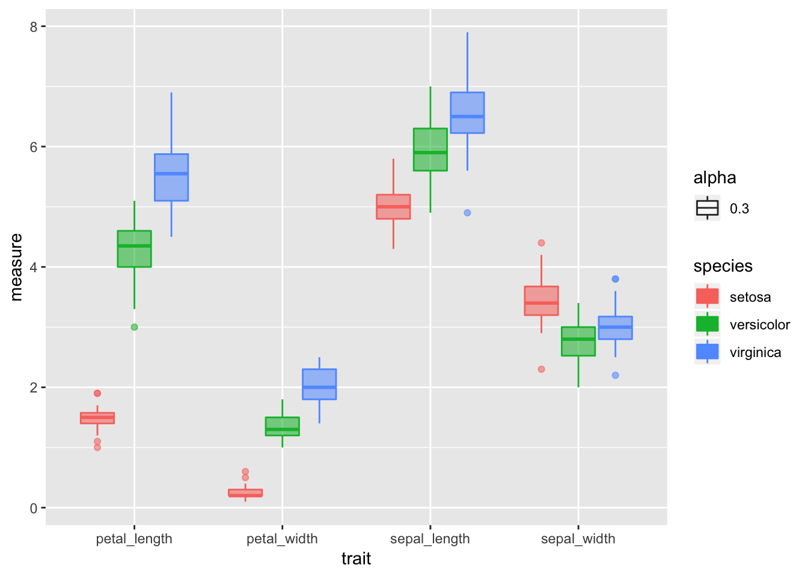

##Load libraries We will read in the main files and load the libraries as we have worked with so far.
# One new package for summary stats
#install.packages("broom")
# install.packages("GGally")
# install.packages("car")
# install.packages("gvlma")
# load the libraries each time you restart R
library(tidyverse)
library(lubridate)
library(scales)
library(skimr)
library(janitor)
library(patchwork)
# library(reshape2)
library(broom)
library(GGally)
library(corrplot)
library(car)
# read in the file
iris.df <- read_csv("data/iris.csv") %>%
clean_names() %>%
remove_empty(c("rows", "cols"))
glimpse(iris.df)## Observations: 150
## Variables: 5
## $ sepal_length <dbl> 5.1, NA, 4.7, 4.6, 5.0, 5.4, 4.6, 5.0, 4.4, 4.9, 5.…
## $ sepal_width <dbl> 3.5, 3.0, 3.2, 3.1, 3.6, 3.9, 3.4, 3.4, 2.9, 3.1, 3…
## $ petal_length <dbl> 1.4, 1.4, 1.3, 1.5, 1.4, 1.7, 1.4, 1.5, 1.4, 1.5, 1…
## $ petal_width <dbl> 0.2, 0.2, 0.2, 0.2, 0.2, 0.4, 0.3, 0.2, 0.2, 0.1, 0…
## $ species <chr> "setosa", "setosa", "setosa", "setosa", "setosa", "…###Summary Statistics for the better look ###So this is a lot different than thinking about data from excel
Lets try to do the summary stats on the data now and see how it differs
# the data you want to look at
skim(iris.df)## Skim summary statistics
## n obs: 150
## n variables: 5
##
## ── Variable type:character ──────────────────────────────────────────
## variable missing complete n min max empty n_unique
## species 0 150 150 6 10 0 3
##
## ── Variable type:numeric ────────────────────────────────────────────
## variable missing complete n mean sd p0 p25 p50 p75 p100
## petal_length 0 150 150 3.76 1.77 1 1.6 4.35 5.1 6.9
## petal_width 0 150 150 1.2 0.76 0.1 0.3 1.3 1.8 2.5
## sepal_length 1 149 150 5.85 0.83 4.3 5.1 5.8 6.4 7.9
## sepal_width 0 150 150 3.06 0.44 2 2.8 3 3.3 4.4
## hist
## ▇▁▁▂▅▅▃▁
## ▇▁▁▅▃▃▂▂
## ▂▇▅▇▆▅▂▂
## ▁▂▅▇▃▂▁▁iris.df %>% group_by(species) %>% skim_to_wide()## # A tibble: 12 x 14
## type species variable missing complete n mean sd p0 p25
## <chr> <chr> <chr> <chr> <chr> <chr> <chr> <chr> <chr> <chr>
## 1 nume… setosa petal_l… 0 50 50 1.46 0.17 "1 " "1.4…
## 2 nume… setosa petal_w… 0 50 50 0.25 0.11 0.1 "0.2…
## 3 nume… setosa sepal_l… 1 49 50 5.01 0.36 4.3 "4.8…
## 4 nume… setosa sepal_w… 0 50 50 3.43 0.38 2.3 "3.2…
## 5 nume… versic… petal_l… 0 50 50 4.26 0.47 "3 " "4 …
## 6 nume… versic… petal_w… 0 50 50 1.33 "0.2… "1 " "1.2…
## 7 nume… versic… sepal_l… 0 50 50 5.94 0.52 4.9 "5.6…
## 8 nume… versic… sepal_w… 0 50 50 2.77 0.31 "2 " 2.52
## 9 nume… virgin… petal_l… 0 50 50 5.55 0.55 4.5 "5.1…
## 10 nume… virgin… petal_w… 0 50 50 2.03 0.27 1.4 "1.8…
## 11 nume… virgin… sepal_l… 0 50 50 6.59 0.64 4.9 6.23
## 12 nume… virgin… sepal_w… 0 50 50 2.97 0.32 2.2 "2.8…
## # … with 4 more variables: p50 <chr>, p75 <chr>, p100 <chr>, hist <chr># this will add an index to the dataframe so you know what individual is which
iris_long.df <- iris.df %>%
mutate(individual = row_number()) %>%
gather(trait, measure, -species, - individual)# Box Plots of data
iris_long.df %>% group_by(species, trait) %>%
ggplot( aes(x = trait, y = measure, color = species, fill=species))+
geom_boxplot(aes(alpha=0.3)) ## Warning: Removed 1 rows containing non-finite values (stat_boxplot).
These look good for the most part with only one or two significant. Your choice to transform or not.
##Factors
Make sure the categorical variable is a factor
Rearrange the order of groups so that control group is first, followed by treatment groups.
you can do this by:
# Make Factors from the different levels long way
# iris_long.df$species <- as.factor(iris_long.df$species)
# iris_long.df$trait <- as.factor(iris_long.df$trait)
# Make Factors dplyr
iris_long.df <- iris_long.df %>%
mutate(
sex = factor(species,
labels = c("setosa", "versicolor", "virginica")),
trait = factor(trait,
labels = c("sepal_length", "sepal_width", "petal_length", "petal_width"))
)So I think this is premature but some people like to test the normality of the data but really you should be assessing the normality of the residuals. But here it goes…
# turn off scientific notaton
options(scipen = 999)
# to turn back on
#options(scipen = 0)
# Test for normality of each group and store in shapirowilktests
# This uses the broom package to get clean output of the test
iris_long.df %>% group_by(species, trait) %>% do(tidy(shapiro.test(.$measure)))## # A tibble: 12 x 5
## # Groups: species, trait [12]
## species trait statistic p.value method
## <chr> <fct> <dbl> <dbl> <chr>
## 1 setosa sepal_length 0.955 0.0548 Shapiro-Wilk normality te…
## 2 setosa sepal_width 0.800 0.000000866 Shapiro-Wilk normality te…
## 3 setosa petal_length 0.977 0.456 Shapiro-Wilk normality te…
## 4 setosa petal_width 0.972 0.272 Shapiro-Wilk normality te…
## 5 versicolor sepal_length 0.966 0.158 Shapiro-Wilk normality te…
## 6 versicolor sepal_width 0.948 0.0273 Shapiro-Wilk normality te…
## 7 versicolor petal_length 0.978 0.465 Shapiro-Wilk normality te…
## 8 versicolor petal_width 0.974 0.338 Shapiro-Wilk normality te…
## 9 virginica sepal_length 0.962 0.110 Shapiro-Wilk normality te…
## 10 virginica sepal_width 0.960 0.0870 Shapiro-Wilk normality te…
## 11 virginica petal_length 0.971 0.258 Shapiro-Wilk normality te…
## 12 virginica petal_width 0.967 0.181 Shapiro-Wilk normality te…#You can do this on all variables faster with if there was only one grouping
# tapply(iris_long.df$measure, iris_long.df$species, shapiro.test)##Test for homogenetiy of variances
Best to use the Levenes test compared to the Bartlet test
uses the car package
http://www.cookbook-r.com/Statistical_analysis/Homogeneity_of_variance/
Note however that this is doing the homogeneity test on all traits and not each one which is what you really should do and is not often done. Need to check on this though.
#Test for homogeneity of variances by groups
leveneTest(sepal_length ~ species, data=iris.df)## Warning in leveneTest.default(y = y, group = group, ...): group coerced to
## factor.## Levene's Test for Homogeneity of Variance (center = median)
## Df F value Pr(>F)
## group 2 6.0386 0.003022 **
## 146
## ---
## Signif. codes: 0 '***' 0.001 '**' 0.01 '*' 0.05 '.' 0.1 ' ' 1#Compared to the Bartlet test
bartlett.test(sepal_length ~ species, data=iris.df)##
## Bartlett test of homogeneity of variances
##
## data: sepal_length by species
## Bartlett's K-squared = 15.308, df = 2, p-value = 0.0004742# Bartlett test with interaction
# bartlett.test(measure ~ interaction(species,trait), data=iris.df)Adding in soon